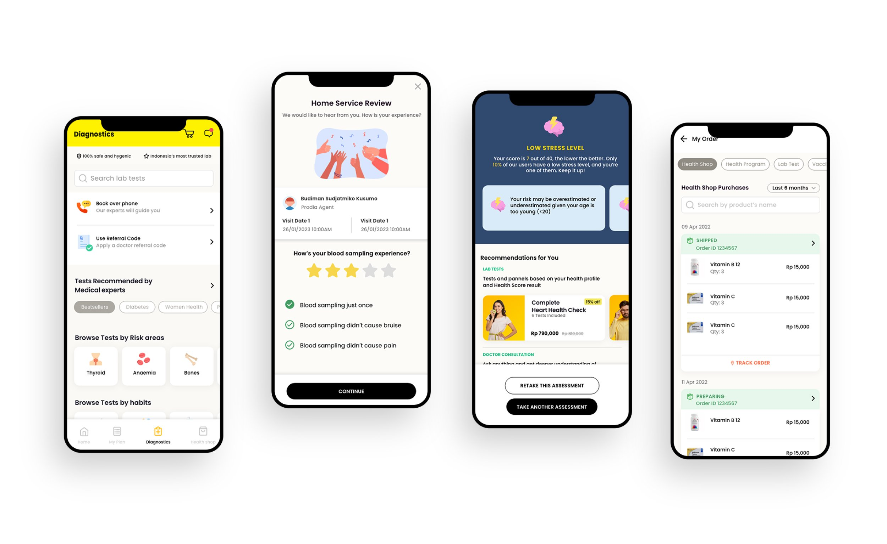
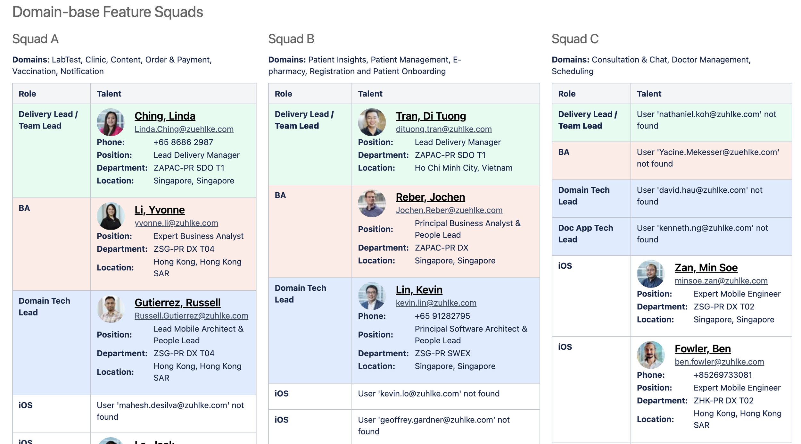
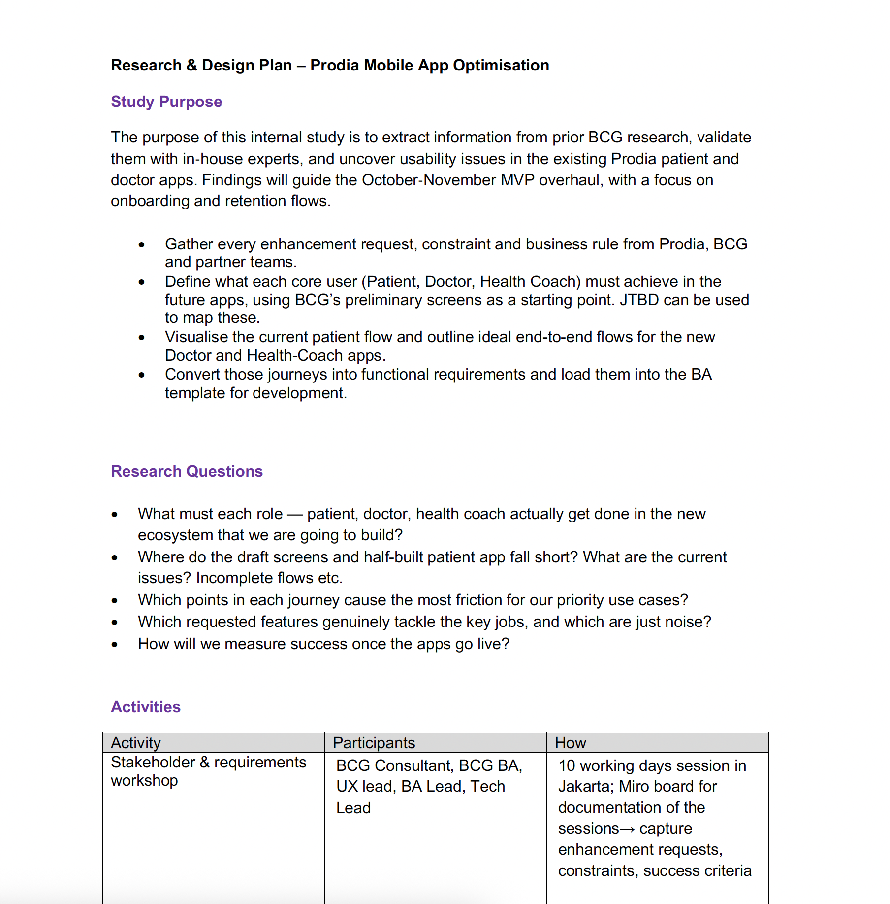
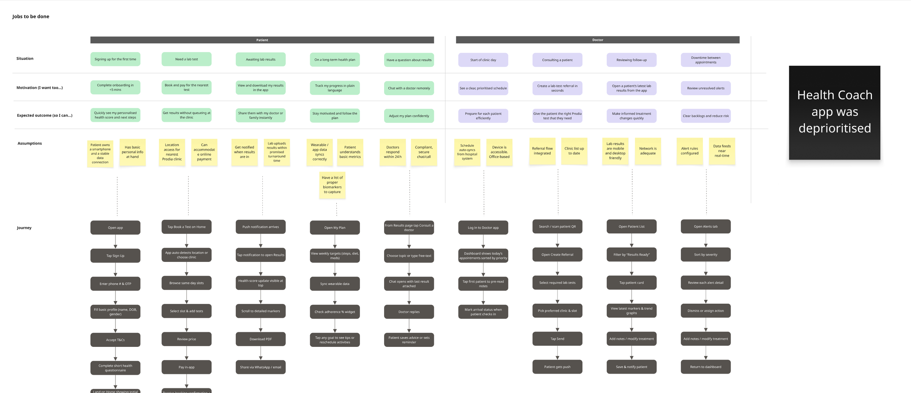
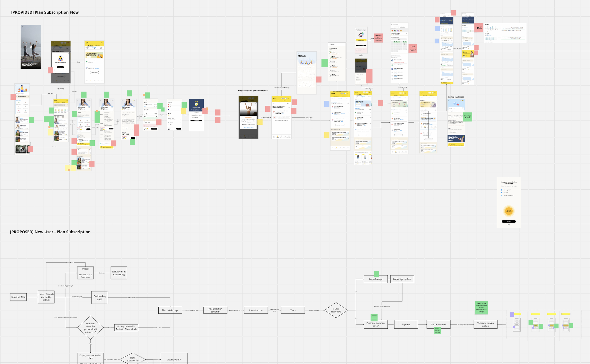
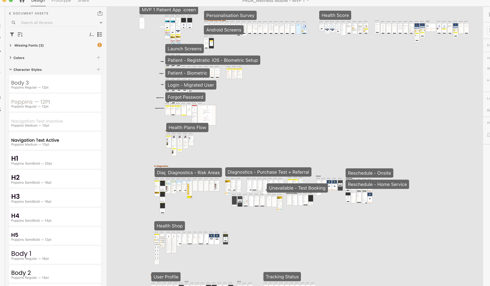
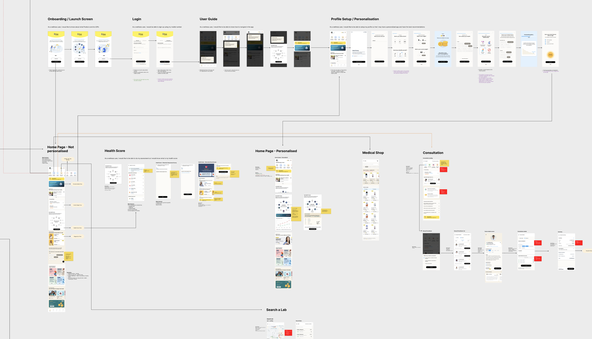
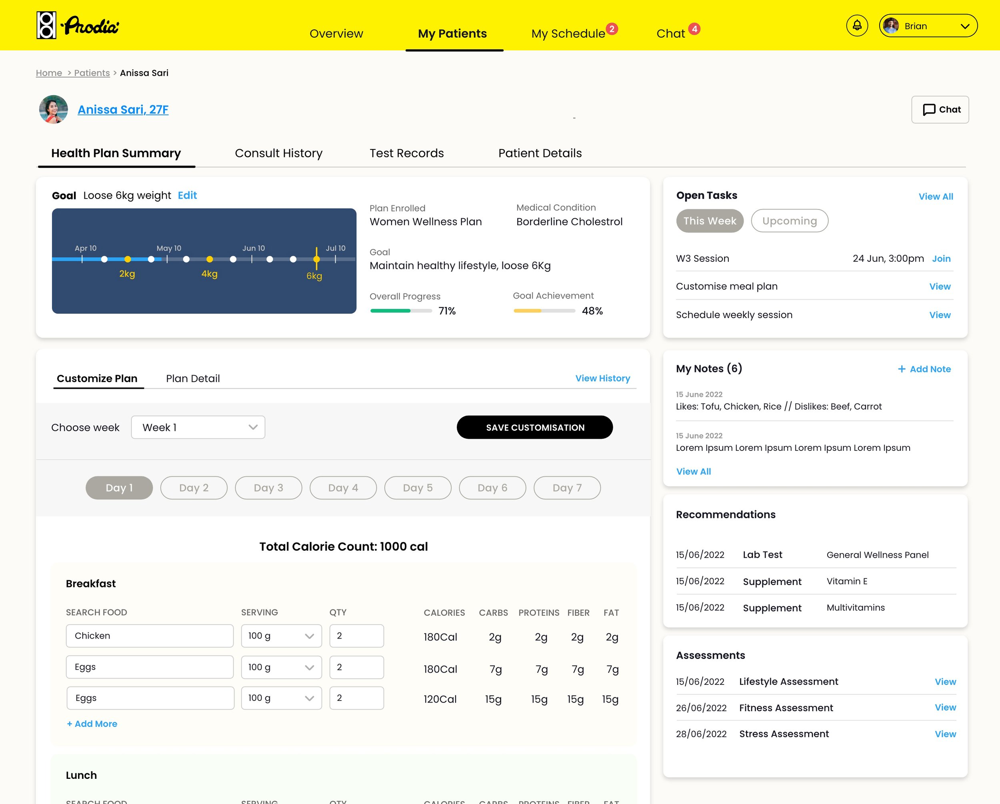
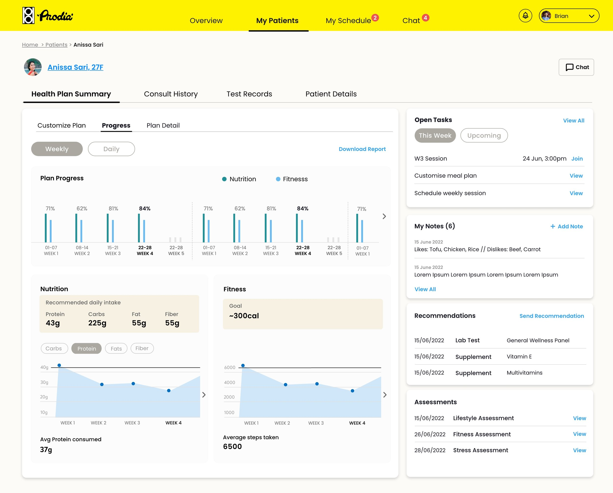

One of Indonesia’s largest healthcare providers set out to build a revolutionary digital health platform — one that bridges online care and in-clinic services, tailored to individual needs and lifestyles. I led the UX design across patient and clinician apps within a 40–50 person cross-functional team.
Indonesia is committed to improving general access to healthcare through digitalisation. In this context, one of Indonesia’s largest healthcare providers aimed to develop a revolutionary solution: Indonesia’s first digital health app perfectly tailored to individual needs and lifestyles.
The solution needed to go beyond booking medical appointments. It had to enable online consultations, deliver preventive care guidance, and provide personalised health information — all within a single, seamless digital workflow that connects patients, doctors, and back-office systems.
I led UX design across the patient and clinician apps, working within a large cross-functional team alongside BAs, engineers, and a consulting partner.
Stakeholder workshops, heuristic audit, requirements engineering, JTBD extraction
Workflow mapping, light personas, journey maps, current-state analysis
Lo-fi → hi-fi prototyping, design system, localisation, developer handover

The patient app — diagnostics, home service review, personalised health scores, and an integrated health shop
The client needed a single platform that bridges online care and in-clinic services, giving patients seamless access to booking, consultation, and results in one digital workflow. The goal was to create a one-stop health app for bookings, consults, and preventive-care guidance that anchors their digital ecosystem.
But this wasn’t just a patient-facing problem. The ecosystem involved three interconnected apps — patient, clinician, and back-office — and the integration architecture had to link all of them into a single data flow. Designing in isolation wasn’t an option.
Formal user testing wasn’t permitted on this project. That meant every design decision had to be grounded in stakeholder walkthroughs, heuristic analysis, and internal validation rather than direct user feedback. It pushed us to be rigorous about the research we could do and transparent about the assumptions we were making.

Domain-based feature squads — three squads spanning patient, clinician, and back-office domains across Singapore, Vietnam, and Hong Kong
We followed a structured but lean approach — from on-site immersion in Jakarta through to developer handover — compressing research, design, and validation into a focused engagement.
Drafted a lean research-and-design plan with objectives, timeline, and approvals for client sign-off. Spent two weeks on-site in Jakarta with the consulting and dev teams to absorb requirements and constraints.
Ran a rapid heuristic audit of the live patient and doctor apps. Mapped “as-is” workflows end-to-end, highlighting friction, data gaps, and duplicated steps.
Extracted implicit Jobs-to-Be-Done from earlier user interviews. Compiled light personas and journey maps for team alignment and prioritisation.
Sketched low-fidelity flows in Figma and built clickable mid-fi prototypes for internal walkthroughs and early feedback loops.
Produced high-fidelity Figma prototypes with clearer onboarding, patient-doctor support, contextual search, and streamlined booking flows. Internal walkthrough with engineering for tech feasibility.
Walked through new flows with stakeholders and consulting leads to catch usability issues and workflow fit. Prepared the handover package with design specs for developers.

The research & design plan — scoping the study purpose, research questions, and activities before diving into design

Jobs-to-Be-Done mapping — charting what each role (patient, doctor, health coach) needs to achieve across the ecosystem

Workflow redesign — mapping the existing plan subscription flow (top) against the proposed new user journey (bottom)
The existing design library was in rough shape. Multiple XD files with no single source of truth, duplicated styles, ad-hoc components, and inconsistent naming. Before we could design anything new, we had to fix the foundation.
A streamlined design system kept the UI consistent and sprint velocity high. When engineers can trust that the design file is the truth, handover stops being a negotiation and starts being a handshake.

The consolidated design file — a single source of truth with organised assets, typography, and screen flows

End-to-end patient app workflow — from onboarding and personalisation through to diagnostics, consultations, and health shop
The project delivered tangible results — from a country-first digital health app going live to an integration architecture that proved the connected ecosystem concept.
The platform launched as a single point of access for bookings, consultations, and preventive care guidance — widening access to healthcare across the country.
The doctor-facing app went live on Google Play, giving clinicians a connected tool within the same ecosystem as the patient experience.
The integration architecture linked patient, doctor, and back-office tools into a single data flow — proving the viability of a connected healthcare app ecosystem.
Thorough upfront requirements engineering meant no rework cycles. The clarity of the research and design artefacts gave the engineering team confidence to start building early.

Clinician companion app — patient detail view with health plan summary, customisable meal plans, tasks, notes, and recommendations

Patient progress tracking — weekly nutrition and fitness data giving clinicians a clear view of plan adherence
Two weeks embedded in Jakarta with the consulting team, BAs, and developers gave me direct access to requirements, constraints, and the people behind them. Context that would have taken weeks of back-and-forth over email was absorbed in days.
I walked engineering teams through every new flow before handing off specs. Internal walkthroughs caught feasibility issues early and gave developers ownership of the design rationale — not just the pixels.
With 40–50 people spread across three squads and multiple countries, alignment didn’t happen by accident. I used the consolidated design file and shared workflow maps as coordination tools — everyone referencing the same source of truth.
Requirements gathering wasn’t just the BA’s job. I sat in stakeholder workshops, translated business needs into workflow requirements, and fed design constraints back into the requirements process. This closed the gap between what was specified and what was actually buildable.
A broken design library creates friction on every sprint. Investing time upfront to consolidate, deduplicate, and document the system paid for itself many times over in velocity and consistency.
Patient, clinician, and back-office apps aren’t separate products — they’re parts of one workflow. Designing them in isolation creates gaps. Designing them as a system creates coherence.
Without direct user testing, every other research method matters more. Heuristic audits, stakeholder walkthroughs, and JTBD extraction became the foundation for every design decision.
Two weeks in Jakarta gave me context that no brief or document could. Understanding the team dynamics, technical constraints, and cultural nuances firsthand shaped better design decisions.
We started with a brief to digitalise one healthcare provider’s services. We ended with Indonesia’s first all-in-one health app, a clinician companion with 5,000+ installs, and a connected ecosystem linking patient, doctor, and back-office tools into a single data flow. The most important shift wasn’t just the product — it was proving that user-centred design could meet both business targets and real-world patient needs, even within the constraints of a large, distributed team and no formal user testing.